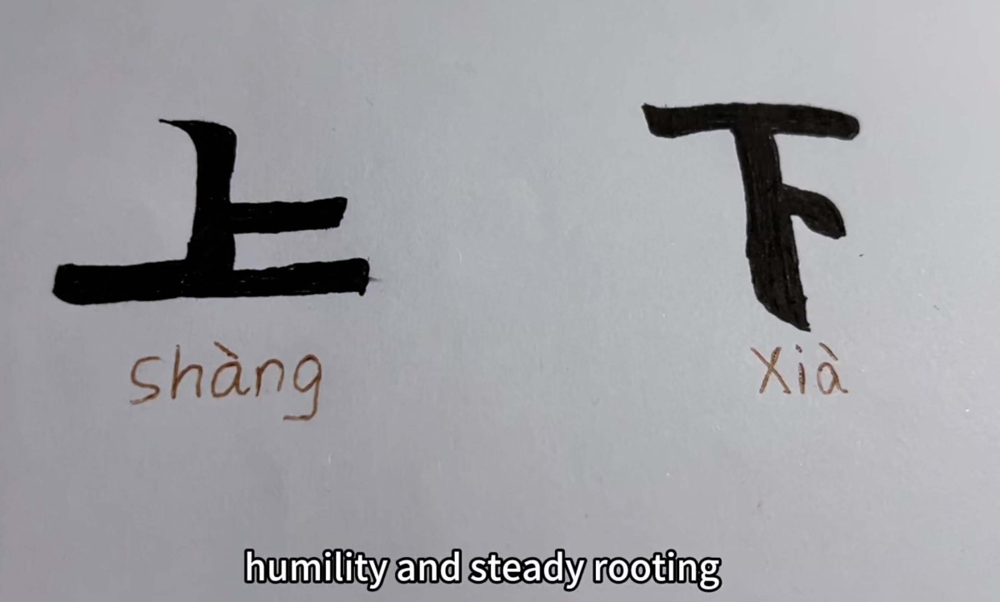

Qu Yuan’s Questions to Heaven
The celebrated Chinese poet Qu Yuan (c. 340–278 BCE) composed Questions to Heaven (天問, Tian Wen), a remarkable poem asking questions about the origins of the universe, nature, and human existence.
In a shared Zoom class, Chinese and American students practiced Chinese calligraphy and explored one of Qu Yuan’s opening questions:
Through calligraphy, drawing, and conversation, students explored how we might understand this ancient question—and how seeing through another person’s eyes might change our own understanding.
This experiment is ongoing! If Qu Yuan’s question inspires you to think about Above and Below in a new way, share your response with us through a drawing, photograph, or short video. We would be delighted to add your contribution to this growing gallery.
 ▶
▶
 ▶
▶

▶ ▶
▶
Reflections & Dialogue
Students, faculty, and visitors are warmly invited to share thoughts, questions, or responses to the works above.